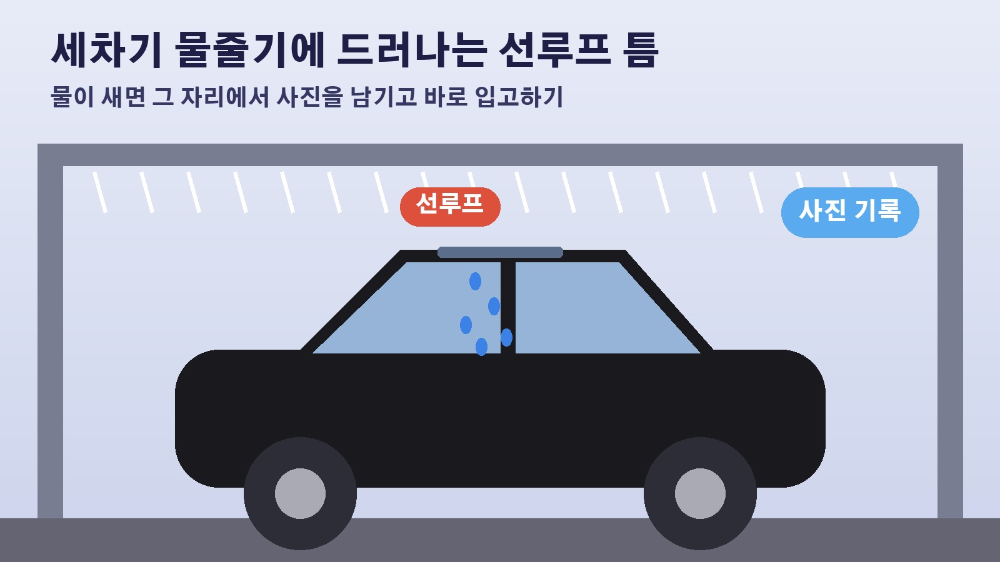

3억 원 드림카 첫 자동세차에서 선루프로 물이 샜다, 한 번도 안 연 선루프 누수와 노터치 세차 거부 답변 사례
새 차를 뽑고 첫 세차 날은 괜히 설레죠. 흠집이라도 날까 봐 세차장도 고르고 또 고르게 되고요. 그런데 10월 22일 SBS 뉴스헌터스가 다룬 사연은 그 설렘이 첫 자동세차에서 한순간에 무너진 이야기였습니다. 3억 원 가까운 수입차 안으로 선루프를 통해 물이 떨어졌다는 건데요. 비슷한 일을 겪었던 예전 보도까지 함께 묶어서, 세차하다 선루프 쪽에서 물이 새면 어떤 일이 이어지는지 정리해 봤습니다.
주식까지 팔아 산 3억 원 차, 첫 자동세차에서 생긴 일
SBS 보도에 따르면 제보자는 지난 9월 주식까지 팔아 대당 수억 원짜리 수입차를 샀습니다. 3억 원 가까운 차에 행여 흠집이라도 생길까 봐 세차장도 비싼 곳으로 골랐다고 해요. 그런데 첫 자동세차 도중 예상하지 못한 일이 벌어졌습니다. 차 안으로 물이 떨어진 겁니다. 물이 들어온 곳은 차를 산 뒤 한 번도 열어 보지 않은 선루프였습니다.
수입 판매사 답변은 더 황당했다
제보자가 수입 판매사에 문제를 제기했더니 돌아온 대답이 더 황당했다고 SBS는 전했습니다. 다만 판매사가 정확히 어떤 말을 했는지는 기사 글에는 나오지 않고 방송 영상에서 자세히 다뤘다고 안내하고 있어요. 그래서 이 글에서는 답변 내용을 옮기지 않겠습니다. 이 방송에는 변호사 두 명이 대담자로 함께 나왔는데요, 새 차 누수를 두고 소비자가 어떤 대응을 할 수 있는지 궁금하신 분은 SBS 뉴스헌터스 10월 22일 방송분을 직접 확인해 보시는 것이 정확합니다.
예전 GV80 사례, 노터치 세차를 하지 말라는 답
세차 중 선루프 누수는 처음 있는 일이 아닙니다. 2023년 11월 M투데이 보도에 따르면 GV80을 3년째 타던 한 차주가 노터치 세차를 하다 천장에서 물이 떨어지는 것을 발견했습니다. 선루프 쪽에서 새기 시작한 물은 금세 꽤 많은 양으로 늘었고, 그 뒤로 차량 컨트롤 박스가 오작동하고 하이패스와 실내등이 켜지지 않는 문제까지 생겼다고 해요. 현대차 하이테크센터에 맡겼더니 GV80은 노터치 세차를 견디도록 설계하지 않았으니 웬만하면 노터치 세차를 하지 말라는 답을 들었다고 합니다.

수리 뒤 주유소 세차에서 또 샜다
더 곤란한 일은 그다음이었습니다. 수리가 끝났다는 연락을 받고 차를 찾은 차주가 혹시나 해서 주유소에 딸린 일반 세차를 이용했는데, 또다시 천장 쪽에 물이 고이더니 뚝뚝 떨어졌다고 해요. 처음보다 더 많은 양이었다고 합니다. 서비스센터는 사과했지만 정확한 원인은 찾지 못했고, 다시 찾아온 차는 이번엔 선루프가 아예 열리지 않아 세 번째로 입고됐습니다. 차주는 노터치 세차보다 압력이 약한 브러시 세차에서도 물이 샜다면 차에 문제가 있는 것 아니냐고 말했습니다. 당시 기사에 나온 전문가들은 제조사가 일정 압력 이상의 고압 세차에 문제가 있다고 미리 경고하지 않았다면 제조사가 책임지고 선루프뿐 아니라 안쪽 전자부품까지 고쳐 주는 것이 맞다고 지적했습니다.
세차하다 물이 새면 이렇게 기록해 두세요
두 사례 모두 세차장에서 처음 문제가 드러났다는 공통점이 있습니다. 비가 올 때는 잘 모르고 지나가던 틈이 세차기의 센 물줄기를 맞으면서 드러나는 거죠. GV80 차주가 세차장에서 수건을 깔고 나와 곧바로 서비스센터에 맡긴 것처럼, 물이 새는 걸 발견하면 그 자리에서 물이 떨어지는 모습을 찍어 두고 바로 입고하는 것이 원인을 따질 때 도움이 됩니다. 그리고 설명서에 특정 세차 방식을 피하라는 경고가 있는지 미리 확인해 두면, 나중에 세차 방식 탓이라는 답을 들었을 때 따져 볼 근거가 됩니다.
참고한 기사: SBS 사건why 수억 원 드림카 뽑았는데 선루프에서 물이 2026년 10월 22일, M투데이 세차 중 천장에서 물이 떨어진다 2023년 11월 22일
태그
선루프누수 자동세차 노터치세차 수입차 새차하자 세차누수 GV80 세차장 차량관리 SBS뉴스헌터스